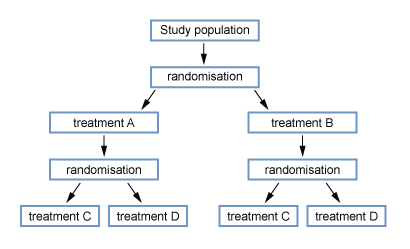
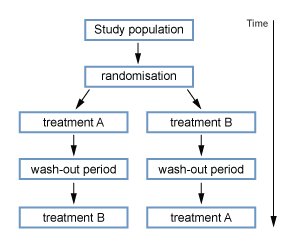

11 Intervention study
11.1 Design and why do Intervention study?
Intervention studies are similar to cohort study. Instead of observing the presence and absence of an exposure, we allocate the intervention to one group of the study population. The other unexposed group acts as control group. Both groups are then followed up over a period of time.
A gold standard intervention study is randomised controlled trial(RCT). Participants and allocated to receive the intervention or not at random. The RCT has some advantages:
when done correctly on a large enough group, the comparison groups will usually be similar with respect to potential confounders, both known and unknown.
it prevents bias in the allocation of participants to the intervention or control groups.
If the randomisation is done correctly, the only difference between the intervention and control groups is whether or not they received the intervention. Therefore any difference in outcome should be attributable to the intervention.
11.2 Main steps in conducting a Intervention study
Step 1: Defining the study question and target population
question is usually of the type “does the intervention affect the outcome?” with 2 main categories:
interventions which are intended to prevent a negative outcome occurring or promote a positive outcome. (vaccination, prevention method)
interventions intended to modify the course of a disease once it occurs (a therapeutic or treatment trial)
To define our question we should consider 3 questions:
- Who are the target population?
is it aimed at the general population, or specifically at a high-risk group?
is it aimed at a particular subgroup of the population, for example women, or people in a particular age group?
- What outcome should we measure?
endpoint: morbidity and mortality
intermediate endpoint: we must be sure that the intermediate endpoint is a valid measure of the ultimate endpoint, e.g.: cholesterol level could be used to evaluate interventions for cardiovascular disease. Change in CD4 cannot be used as it’s not predictive of mortality in long term.
- Efficacy or effectiveness?
- efficacy
determine the maximum effect of the intervention under ideal conditions (efforts are made to encourage participant to adhere to the treatment)
Adherence (compliance): the degree to which participants take the allocated treatment correctly.
Concordance: the degree to which the intervention received is a result of the participant being active in the decision making process
- effectiveness
determine the effect of the intervention under conditions of routine practice (operational conditions)
Ethical issues in intervention study
Is it ethical to randomise? A trial is only ethical when there is equipoise. We only introduce new intervention if we can demonstrate that the intervention is of benefit. This requires a trial to compare new treatment and standard one.
Consent
Participants should understand the study, the potential risk and consent for their participation. Sometimes, consent from community leader is more feasible.
Monitoring the progress of an intervention study
Monitor on both safety and statistical aspects, ensure that the trial may be stopped early if an early benefit or adverse effect of the intervention is observed
Step 2: Define the study population
Study population should be representative of target population so that we could genernalise our study result to that population.
Study size should be large enough to have a meaningful result. Sample size calculation should be carried out.
Individual level or group level interventions. Sometimes we need to apply the intervention to the whole community. We then use randomised clusters trial. However, the sample size for cluster-randomised trials are much larger and it also has a higher risk of cross-contamination
Step 3: Allocating the intervention
Randomisation (parallel design)
- block randomisation
- stratified randomisation
other methods: using odd-even numbers. days of weeks.
Special designs
- Factorial
 - Cross over

Control group: placebo or standard treatment
Step 4: Follow-up of participants and measure the outcome just as cohort studies:
loss to follow up may result selection bias
the outcome of interest must be clearly defined, preferably using a case definition which was decided at the start of the study.
we must try to maximise the proportion of outcome events which are ascertained.
routine data may be used to determine the outcome
To reduce bias:
blind person who determine the outcome to the interventions allocation to reduce observe bias
blind participants to the interventions allocation to reduce information bias
In addition to ascertaining outcomes, we also need to record any adverse events that occur which could be attributable to the study treatment(s) so that these can be compared between the two groups.
Step 5: Analysing data Interpreting results
Measure the effect of the intervention
a binary outcome: risk or rate ratio in the intervention group compare to control group with 95%CI.
not binary outcome: comparison of 2 means with p value.
Analysis method:
1) Intention to treat
it is the main analysis of an intervention study We compare the incidence of the outcome between the 2 groups with the individuals treated to the group which they were assigned to at the beginning regardless if someone stopped taking the allocated treatment, changed to the other treatment, or were lost to follow-up.
intention to treat analysis is the most important and “safest” analysis but
is most likely to result in an underestimation of the effect of an intervention if they switched to the other treatment allocation, or were lost to follow-up
Less commonly, an “intention to treat” analysis may result in an overestimation of the effect of an intervention because of differential adherence in the two groups.
2) per protocol “on randomised treatment” analysis
is restricted to follow-up time during which individuals were receiving the treatment that they were allocated to, and excludes follow-up time during which any individuals were not receiving their allocated treatment (for whatever reason). Such an analysis may again introduce bias, since it is likely that participants who discontinue treatment are different from those who remain on treatment.
Subgroup analyses are often performed. However, subgroup analysis may be subgroups can be misleading, especially if the subgroups are based on characteristics that develop during the study.